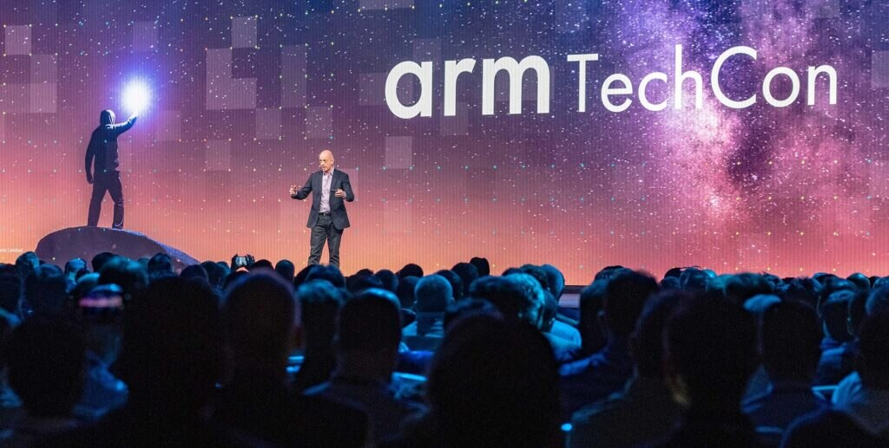
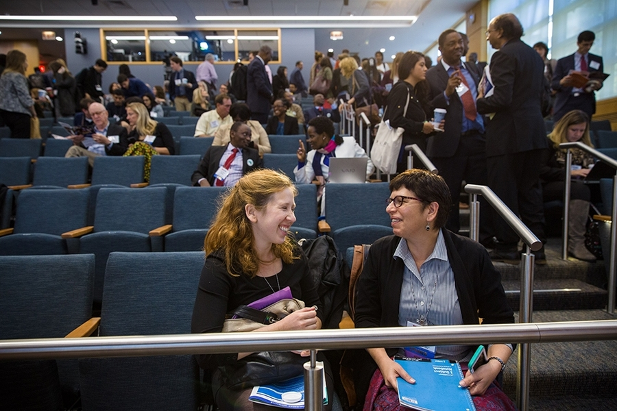

Our Origin and Evolution
TechCon was established in 2010 with the vision of creating a global platform for technology enthusiasts and professionals to connect, learn, and share knowledge. Over the years, it has grown into one of the most anticipated tech events, attracting thousands of attendees from around the world.
Each year, TechCon evolves to include the latest trends and innovations in technology, ensuring that participants have access to cutting-edge information and networking opportunities.

Our goals and driving principles of the conference
At TechCon, our primary goal is to foster a collaborative environment where technology professionals can come together to share ideas, learn from each other, and drive innovation forward. We are committed to providing high-quality content through keynote speeches, workshops, and panel discussions led by industry experts.
We believe in inclusivity, diversity, and the power of community. Our conference is designed to be accessible to individuals from all backgrounds and experience levels, ensuring that everyone has the opportunity to benefit from the event.

 2024
2024